Practica 3.2 Despliegue de aplicaciones con Node Express y Netlify.
Despliegue con Node Express.
Introducción
En esta prática vamos a realizar el despliegue de aplicaciones Node.js sobre un servidor Node Express. En este caso el despliegue no se hace en el servidor, sino que la aplicación es el servidor.
Instalación Node Express.
Primero deberemos instalar Node.js. Pero antes de nada actualizaremos primero el sistema operativo.
sudo apt update
sudo apt upgrade
Luego ejecutaremos el siguiente comando.
curl -sL https://deb.nodesource.com/setup_16.x | sudo -E bash
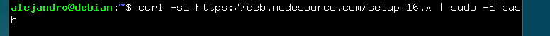
Después instalaremos node.js:
sudo apt install nodejs.
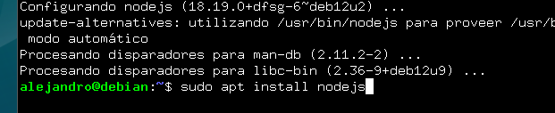
Tras esto comprobaremos las instalaciones.

Ahora que ya tenemos instalado Nodejs instalaremos Express.js
sudo npm install -g express
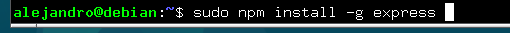
Crearemos la carpeta del proyecto, nos metemos dentro de la carpeta e inicializamos el proyecto.
mkdir project
cd proyect
npm init -y
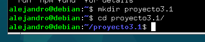
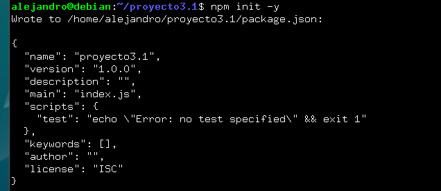
Una vez ya creada, instalaremos Express.js para este proyecto local y crearemos un archivo de muestra.
npm install express
sudo nano app.js
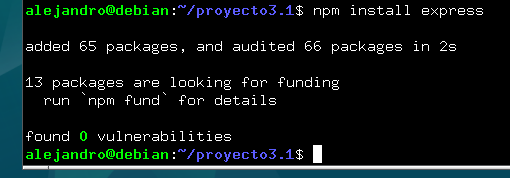
En este archivo agregaremos lo siguiente.
const express = require('express')
const app = express()
const port = 3000
app.get('/', (req, res) => {
res.send('Hello. Welcome to this blog')
})
app.listen(port, () => {
console.log(`Example app listening at http://localhost:${port}`)
})
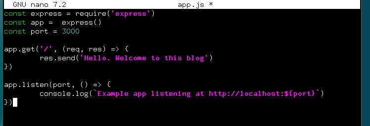
Ahora ejecutaremos el proyecto con el siguiente comando :
node app.js
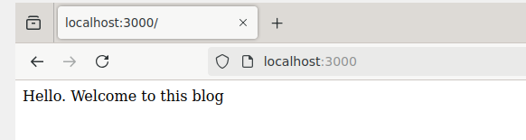
Despliegue de una nueva aplicación.
Primero deberemos clonar el reposito y entrar en la carpeta del repositorio.
git clone https://github.com/MehedilslamRipon/Shopping-Cart-Application
cd Shopping-Cart-Application
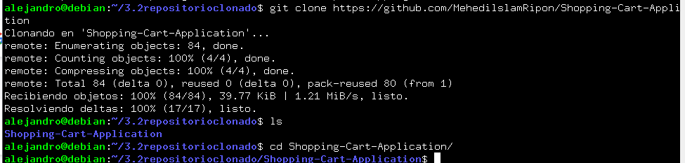
Instalaremos las librerias necesarias:
npm install

Y por último correremos la aplicación.
npm run start
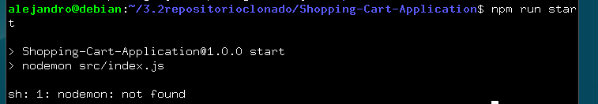
El problema de nodemon se soluciona con el siguiente comando IMAGEN. 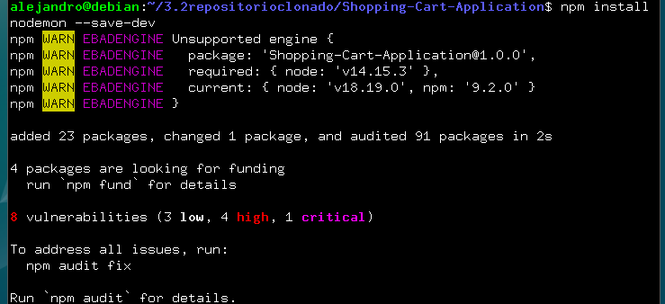 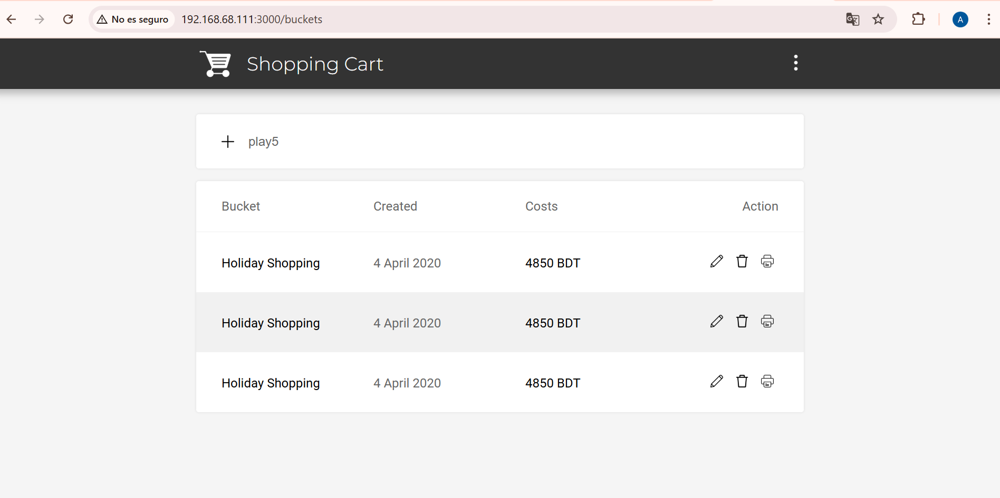
Despliegue Netlify.
Introducción.
Esta pŕactica se acerca más a la realidad ya que utilizaremos un repositorio de githus PaaS como Netlify para desplegar adecuadamente nuestra aplicación en producción. ¿Que es Github? Es un servicio basado en la nube que aloja un sit. Este permite a los desarrolladores colaborar y realizar cambios en proyectos compartidos a la vez que mantienen un seguimiento detallado de su proceso.
¿Que es Netlify? Es un proveedor de alojamiento en la nube que proporciona servicios de backend sin servidor para sitios web státicos. Estaa diseñado para maximizar la productividad en el sentido de que permite a los desarrolladores, y a los ingenieros construir, probar y desplegar rapidamente sitios web/aplicaciones.
Creación de nuestra aplicación.
Tras logearnos por SSH en nuestro debian, nos crearemos un directorio para albergar la aplicación con el nombre que queramos. En ese directorio crearemos 3 archivos, dos html y un .js que conformarán la aplicación.
Head.html
IMAGEN
Tail.html IMAGEN
Aplicacion.js 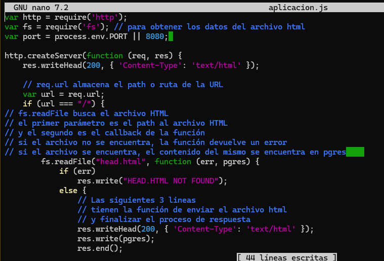
Ahora para crear nuestra aplicacion Node.js, con el fin de crear el archivo package.json, pondremos este comando:
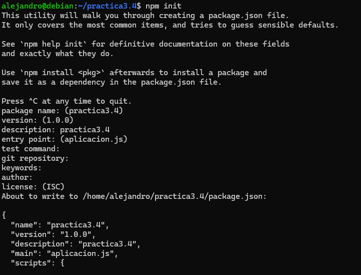
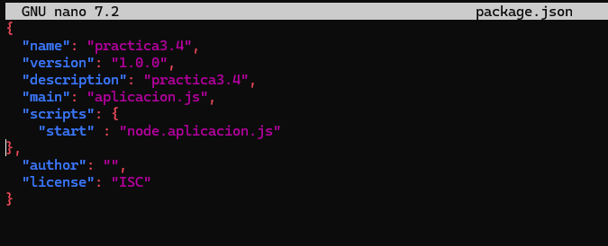
Y podemos probar que nuestra aplicacion funciona perfectamente en local.
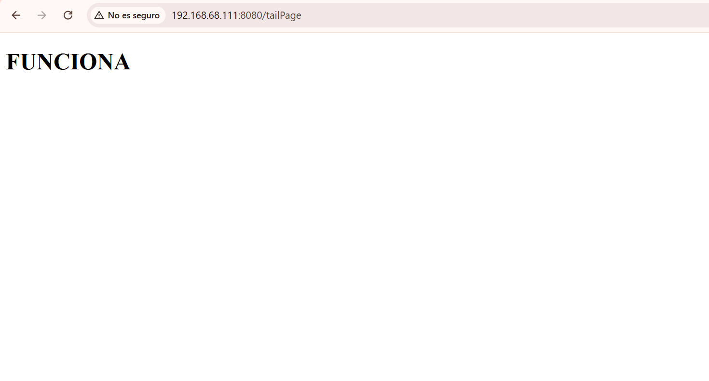
Aplicacion para Netlify
Vamos a usar una aplicación ya creada para centrarnos en el despliegue.
Primero clonaremos este repositorio.
IMAG
Realizaremos dos tipos de despliegue. Despliegue manuel desde CLI de nitlify y despliegue desde un código publicado en uno de nuestros repositorios de github.
Despliegue mediante CLI.
Clonamos el siguiente repositorio. Una vez registrado , debemos instalar el CLI de netlify para ejecutar sus comandos desde la terminal.
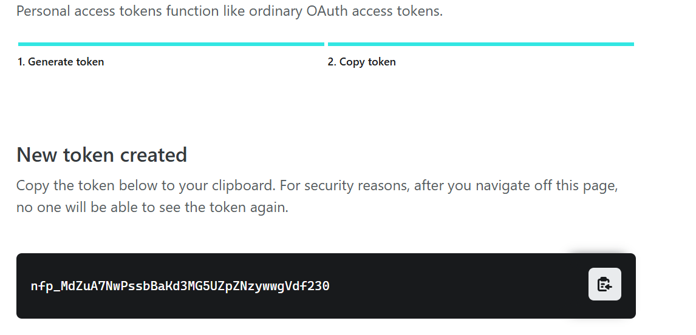
Ahora nos autenticaremos mediante el siguiente comando para realizar acciones de deploy.
El cual nos muestra por pantalla del navegador para que concedamos la autorización pertinente. Sin embargo, recordemos el problema de que estamos conectados por SSH a nuestro servidor y no tenemos la posibilidad de uso de un entorno gráfico. Seguiremos las instrucciones de la documentacion 1. Generamos el token de acceso 2. Lo establecemos como variable de ambiente 3. Y nos logueamos
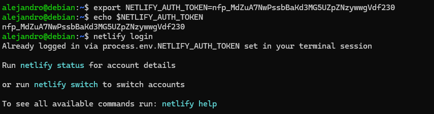
Previamente al despliegue haremos un build de la aplicación. Para ello debemos instalar todas las dependencias .
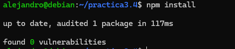
Cuando las tengamos instaladas podemos realizar el build .
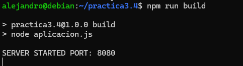
Esto nos creará una nueva carpeta llamada build que contendrá la aplicación que debemos desplegar. Y ya podeos hacer un pre-deploy de la aplicación de la que hemos hecho antes. Tendremos que introducir unos parametros
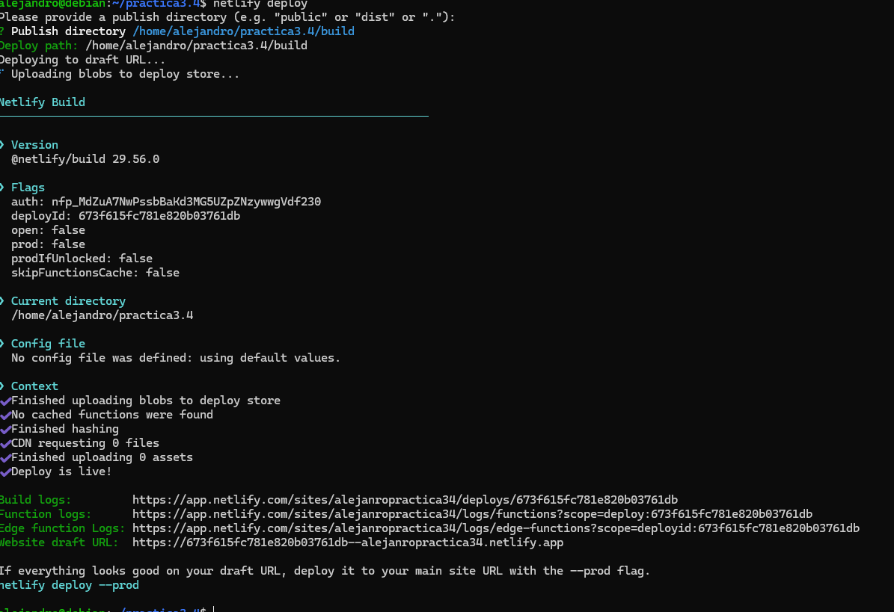
Si nos indica que ha ido bien podemos pasarla a produccion finalmente. Nos debería pasar el siguiente comando. Y acceder al despliegue en netlify.
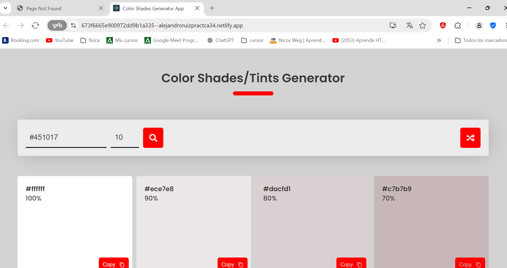
Despliegue mediante conexión con Github.
En primer lugar eliminaremos el site que hemos desplegado antes en netlify para evitarnos problemas. En segundo lugar vamos a borrar el directorio donde se halla el repositorio clonado en el paso anterior para así empezar desde 0.
Como queremos simular que hemos picado el código a man o en local y lo vamos a pasar a github pro primera vez, nos descargaremos los fuentes en formato .zip sin que tenga ninguna referencia a github.
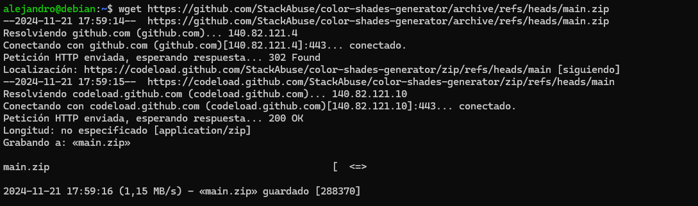
Creamos la carpeta y descomprimimos dentro del zip.
mkdir practica3.4
unzip main.zip -d practica3.4/
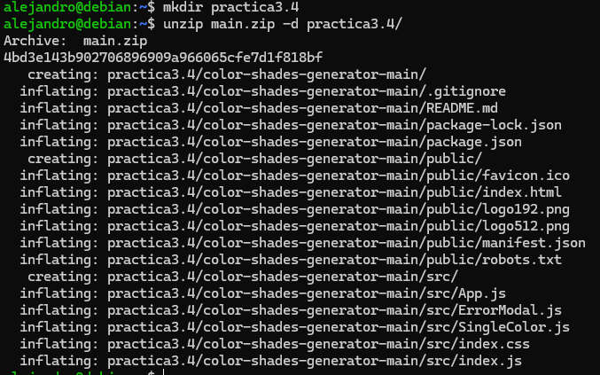
Entramos en la carpeta donde está el código. Ahora debemos crear un resitorio completamente vacío que se llame practicaTresCuatro.
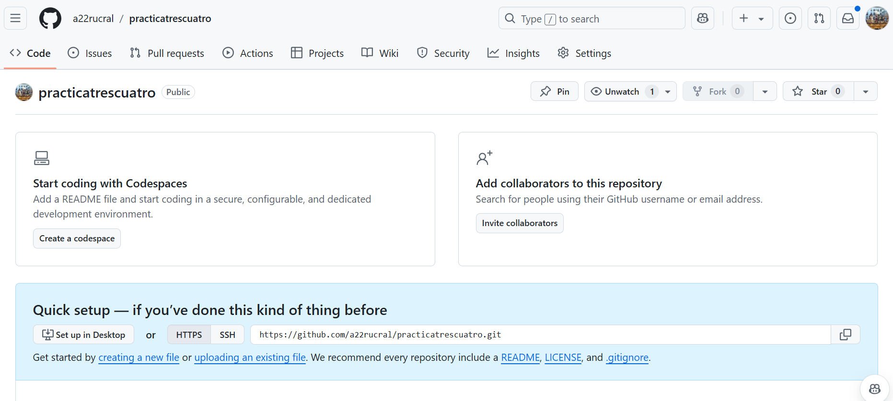
Volviendo a la terminal a la carpeta donde estábamos, la iniciamos como repositorio hacmeos un commit y la rama Main.
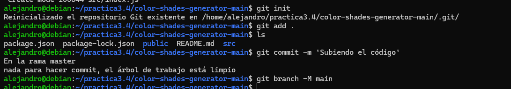
Ahora solo queda referenciar nuestra carpeta al repositorio recién creado en github y hacer un push para subir todo.
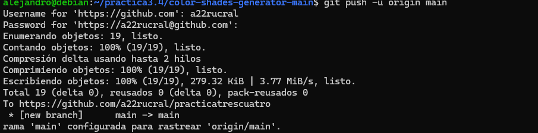
Ahora que ya tenemos subido el código a github, de alguna manera debemos enlazar nuestra cuenta de githubcon la de Netlify para que este últio pueda traerse el código de allí, hacer el build y desplegarlo. Así entraremos en nuestro dashboard de netlify y le damos a importar proyecto existente de git.

Le indicamos que es de github.
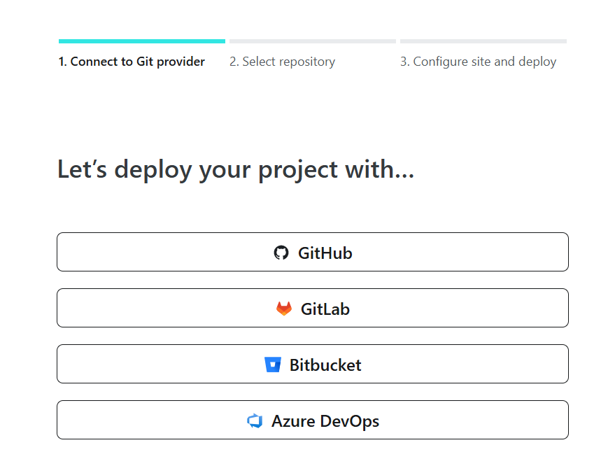
Y nos saltará una ventana pidiendo que autoricemos a Netlify a acceder a nuestros repositorios de Github:
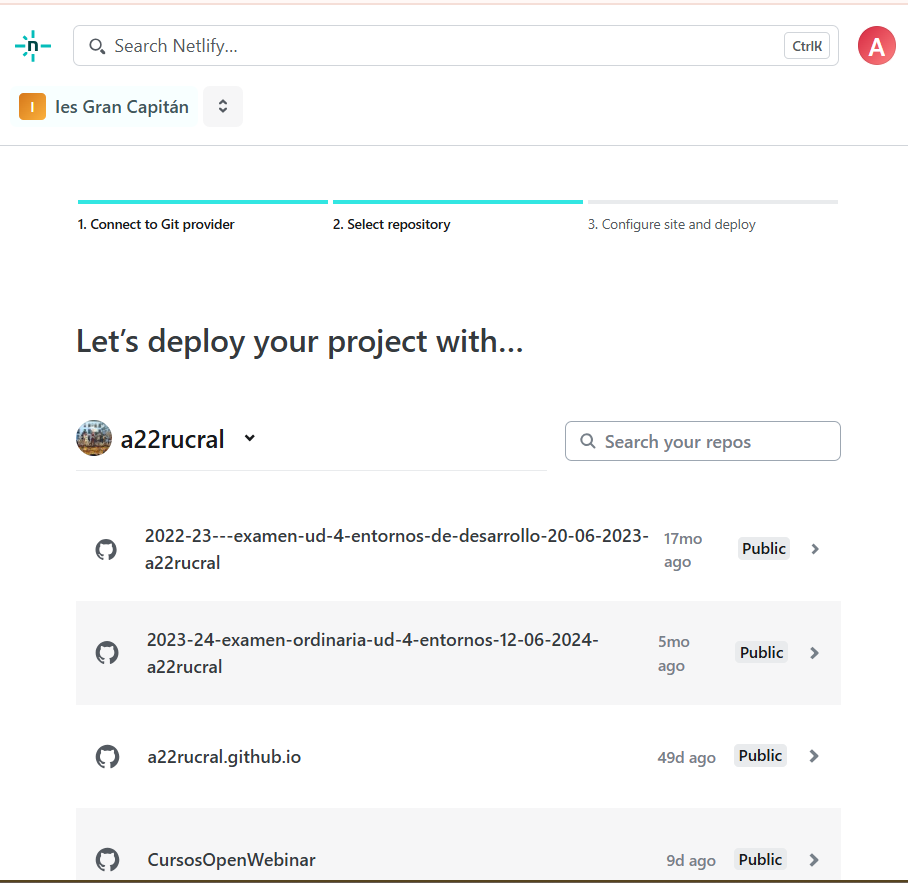
Y luego le indicaremos que no acceda a todos nuestros repositorios sino sólo al repositorio que necesitamos, que es donde tenemos el código de nuestra aplicación:
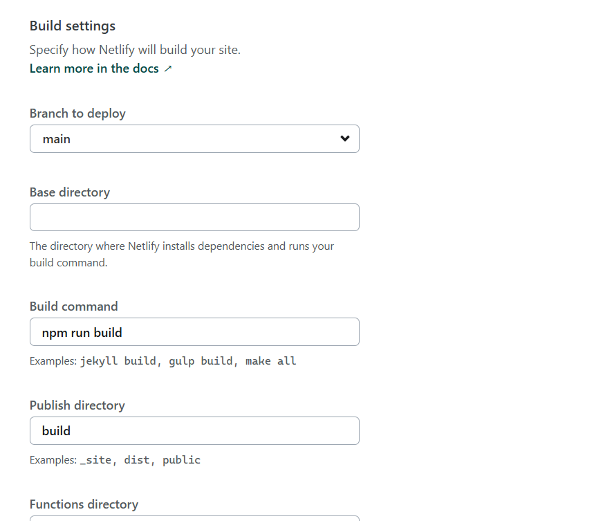
Y desplegamos la aplicación.
Netlify se encargará de hacer el build de forma automática tal y como hemos visto en la imagen de arriba con el comando npm run build publicando el contenido del directorio build. Y ya quedará todo listo.
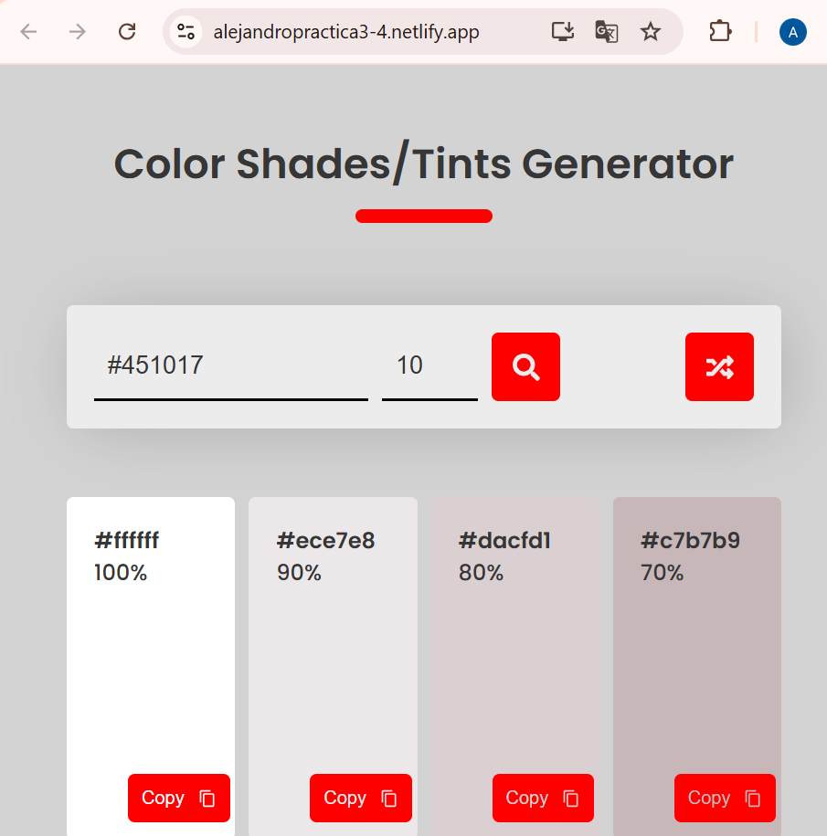
De esta forma, cada cambio que hagamos, en el proyecto, se actualizará con un commit y push. Con esto hará un nuevo despliegue en Netlify.
Comprobaciones.
- DEsntro de la carpeta public encontramos el archivo robots.txt, cuyo cometido es indicar a los rastreadores de los buscadores a que URLs del sitio puden acceder. A este archivo se puede acceder desde la URL del sitio.
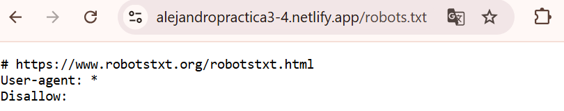
- DEntro de la carpeta public, utilizando el editor de texto que prefirais para modificar el archivo robots.txt para que excluya un directorio que se llame nombre_apellido, con vuestros datos.
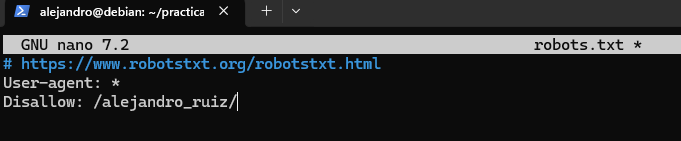
- Haz un nuevo commit y push del caso anterior, recuerda el comando git previo para añadir los archivos a hacer commit.
- Comprueba en el dashboard de netlify que se ha producido un nuevo deploy de la aplicacion hace escasos segundos.
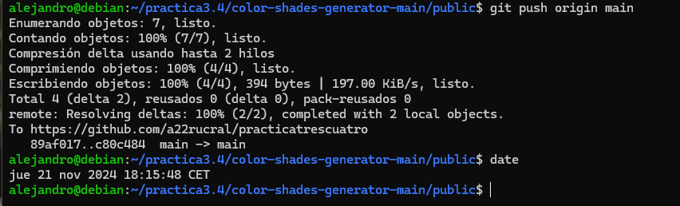
- Accede a https://url_de_la_aplicacion/robots.txt y comprueba que, efectivamente, se ve reflejado el cambio.
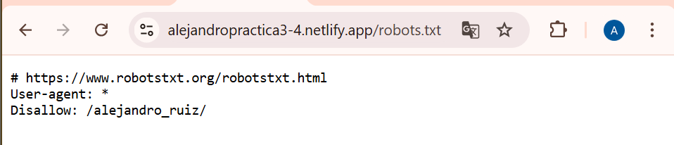